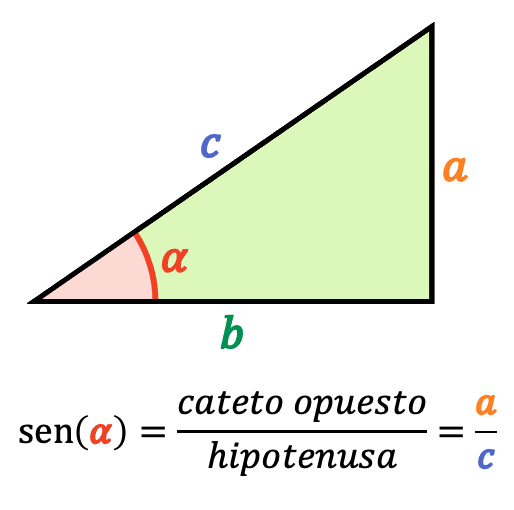
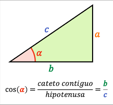
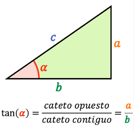
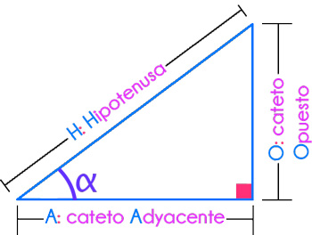
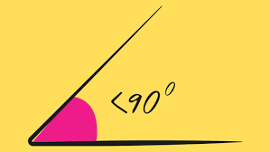
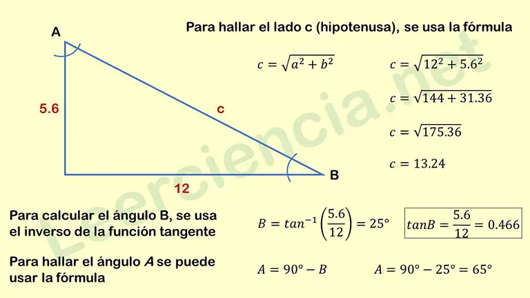

Tema
Conceptos básicos de seno, coseno y tangente.



Explicación
En un triángulo rectángulo se definen seno, coseno y tangente como razones entre los catetos y la hipotenusa. Estas relaciones son fundamentales para la trigonometría y se aplican en diversas áreas como la física, la arquitectura y la ingeniería.


Ejemplo resuelto
En el siguiente ejemplo se muestra cómo calcular los valores de seno, coseno y tangente en un triángulo rectángulo dado:

Actividades
¿Qué es el seno de un ángulo en un triángulo rectángulo?
¿Qué es el coseno de un ángulo en un triángulo rectángulo?
¿Qué es la tangente de un ángulo en un triángulo rectángulo?
¿Cuál es el valor de sin(90°)?
En un triángulo rectángulo, la hipotenusa siempre es…